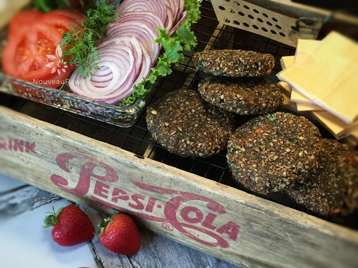

Nutless Veggie Burger Patties
~ raw, vegan, gluten-free ~
So I just caught wind that there is a hip new raw restaurant that just opened in Tucson. Have you heard about it? It’s supposed to be a very cool place to hang out, with a charming and inviting decor, free Wi-Fi, and oh the chef is right there behind a glass wall so you can watch her every move.
Apparently, on Tuesday nights, the chef comes out and prepares your raw meal right at your table! All the while she shares with you all about the benefits of eating raw foods and how good it is for your body.
The chef, so I heard, is a wizard with gourmet raw cuisine. I got all this info off of The Oprah Show where she was interviewing this gal. I then changed the channel and wouldn’t you know it… Martha Stewart was working right along this very same chef! She was showing the audience how to make a raw gourmet cheesecake! Martha was even dangling a piece of Irish moss in front of the camera! Wow, had raw foods really become mainstream?
I have been to several “raw” food restaurants, and sometimes the food is just to “foo-foo” to enjoy. I want comfort food; I want food that takes me back to my childhood days when I didn’t even know what phytonutrients where or that I needed to care about my colon.
Anyway, I have heard great things about this place. It is owned by the chef and her husband who is a real crack-up. I can’t wait to check it out. I will definitely keep you posted.

“Wake up Amie Sue, wake up.” What….huh….did I nod off? Oh, shoot, you mean to tell me that was all a dream?! Well, fiddlesticks. I guess until that dream becomes a reality :), I will share my new recipe for a Raw Nutless Veggie Burger….did I have any of your fooled? Not even for a tiny little bit? hehe
Yields 5 (1/2 cup patties) + 1 slider size
- 1 cup raw sunflower seeds, soaked
- 1/2 cup sun-dried tomatoes, re-hydrated
- 1 1/2 cups carrots, rough dice
- 1 1/2 cup fresh mushrooms; your choice (6oz container)
- Handful fresh cilantro
- 1/4 cup ground flax seeds
- 1 tsp cumin
- 1 tsp coriander
- 1/2 tsp Himalayan pink salt
- 1/2 tsp ground chili peppers
- pepper to taste
Preparation:
- Start by preparing the sunflower seeds and dried- tomatoes.
- Sunflower seeds – soak in 3 cups of water and a pinch of salt for 4-8 hours. Once done, drain and rinse.
- Sun-dried tomatoes – soak in 1 cup of water for 30+ minutes. Drain and discard the soak water. If they are in large pieces, roughly chop them before adding to the food processor.
- In a food processor, fitted with the “S” blade, process the carrots to a small shred. (see below)
- Add the sunflower seeds, tomatoes, mushrooms, cilantro, flax, and spices. Process until the batter sticks together.
- You can leave small bits of texture in the “burger” for a more toothsome bite, or process it more towards a pate texture.
- Using a large ice cream scoop, create the patties and place on the mesh trays that come with the dehydrator.
- Dehydrate at 145 degrees (F) for 1 hour, then reduce to 115 degrees (F) for 16 hours or so. Depends on how well you want them done.
- You can store them for many days in the fridge in an airtight container.
- Enjoy with a raw bun… check it out here!
Culinary Explanations:
- Why do I start the dehydrator at 145 degrees (F)? Click (here) to learn the reason behind this.
- When working with fresh ingredients it is important to taste test as you build a recipe. Learn why (here).
- Don’t own a dehydrator? Learn how to use your oven (here). I do however truly believe that it is a worthwhile investment. Click (here) to learn what I use.
© AmieSue.com